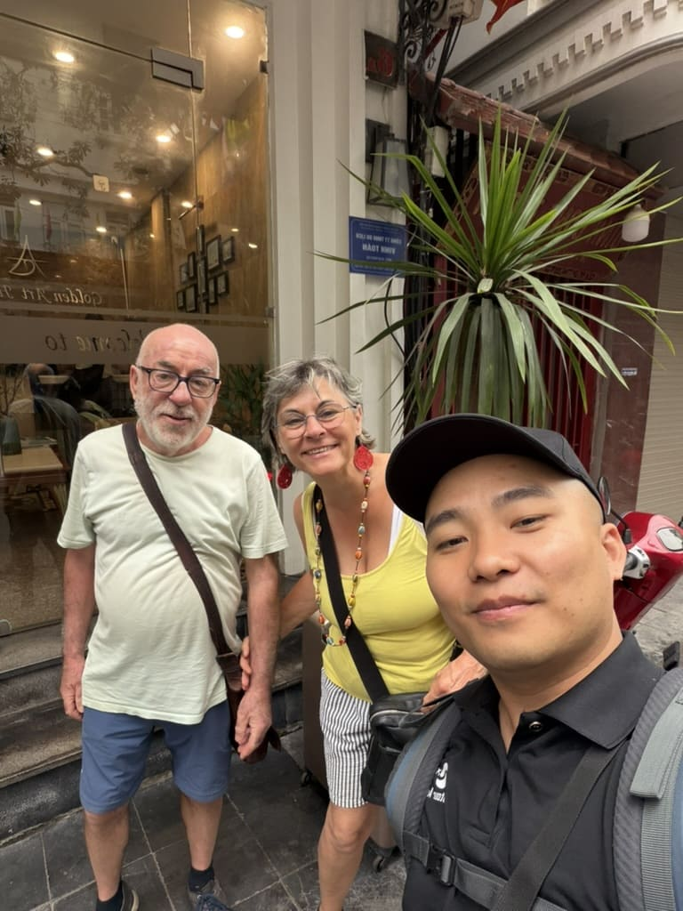
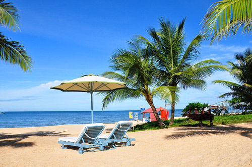

Guide francophone Vietnam


Guide francophone à Hanoi
Guide francophone dans la baie d'Halong
Đến với Việt Nam Travel, Quý khách sẽ có được những tấm VISA chuyên nghiệp nhất để có thể đi đến bất cứ nói đâu trên trái đất này. Hãy đến với Viêt Nam Travel, hân hạnh được phục vụ Quý khách.
Guide francophone à Da Nang
Khi đã đến 1 lần Đại ngàn - Tây Nguyên sẽ không buông tha bước chân của lữ khách, bởi vùng đất này có sức cuốn hút thật lạ kỳ với cà phê, rượu cần, bếp lửa...và những bản tình ca của đại ngàn.

Guide francophone à Phu Quoc
Công ty cam kết tỷ lệ đậu visa cao nhất, tận tâm nhất và đúng hạn trao tận tay Visa tới khách hàng. Để có một bộ hồ sơ hoàn hảo xin visa đạt tỷ lệ đậu cao hãy cùng tìm hiểu qua bài viết này.
Dans le carnet de Jo

Incontournables Vietnam
30+ meilleures choses à faire à Hanoï pour un premier voyage Vietnam
Que faire à Hanoï ? Découvrez avec Joseph les 30+ incontournables à voir à Hanoï : monuments, temples, musées, quartiers et excursions autour de la capitale.
Lire l’article
Circuits Vietnam
Les meilleurs circuits au nord du Vietnam
Que faire au nord Vietnam ? Choisir votre circuit nord vietnam : itinéraires 8, 10 ou 15 jours avec guide francophone vietnam pour un voyage authentique.
Lire l’article
Incontournables Vietnam
Que faire au Vietnam ? Les 20 incontournables à visiter au Vietnam
Que faire au Vietnam ? Découvrez 20 incontournables à faire au Vietnam : Hanoï, baie d’Ha Long, Hoi An, Hué, Sapa, Phong Nha, Mékong et bien plus.
Lire l’article
Conseils Voyage
Où partir pas cher cet été ? 10 destinations soleil, nature à faire
Découvrez 10 destinations où partir pas cher cet été : Vietnam, Thaïlande, Laos, Bali et plus encore pour voyager au soleil sans dépasser votre budget.
Lire l’article
Incontournables Vietnam
Que faire à Da Nang en 1 jour ?
Vous n’avez qu'un jour à Da Nang ? Bonne nouvelle : elle rassemble dans un même périmètre la mer, les montagnes, la culture et des expériences très différentes
Lire l’article
Incontournables Vietnam
Guide Voyage Moc Chau Son La Visite Nord Vietnam
Guide de voyage à Mộc Châu : que faire, quand partir et conseils pratiques pour découvrir paysages, villages et nature de Son La du nord du Vietnam.
Lire l’article